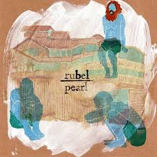

Spotfi
Escute as melhores músicas de cada album abaixo
Cogulândia
Jorge Da Capadócia

Libertários Não Morrem

Quando Bate Aquela Saudade
Cogulândia
Jorge Da Capadócia
Libertários Não Morrem
Quando Bate Aquela Saudade